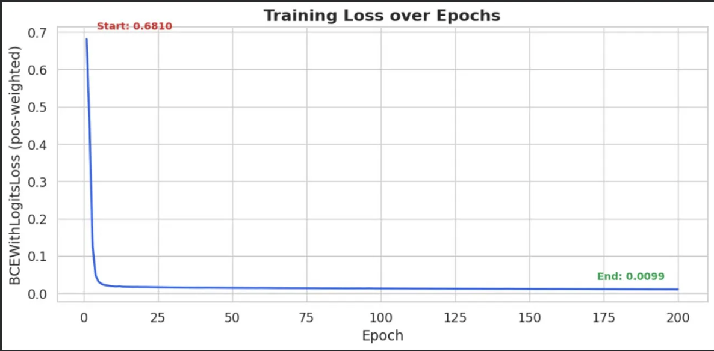
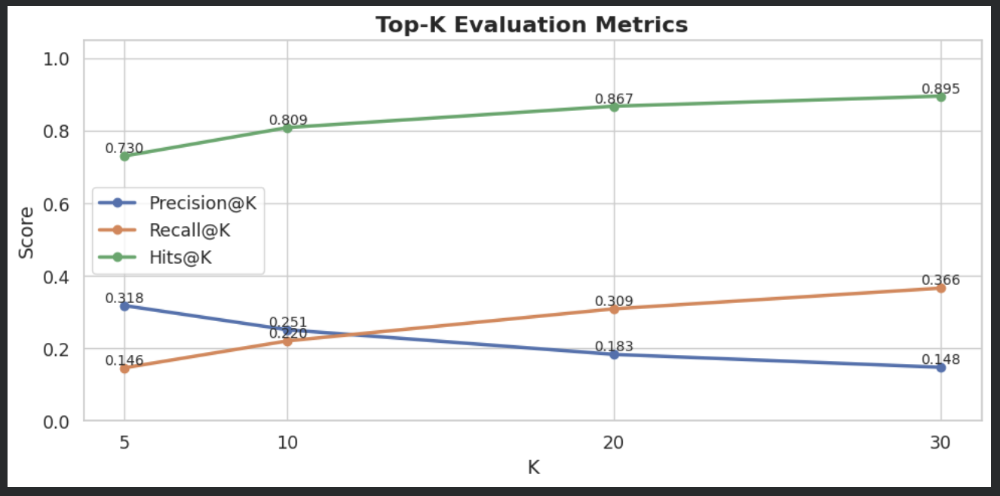
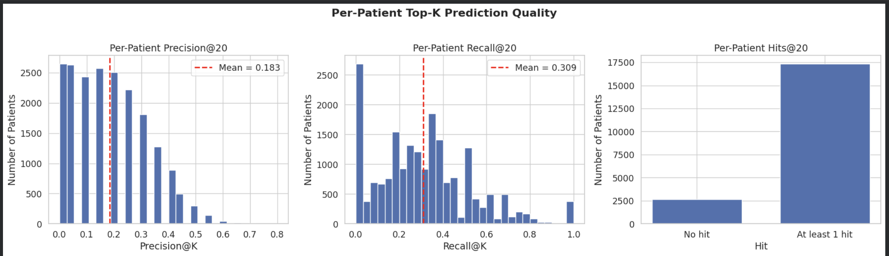
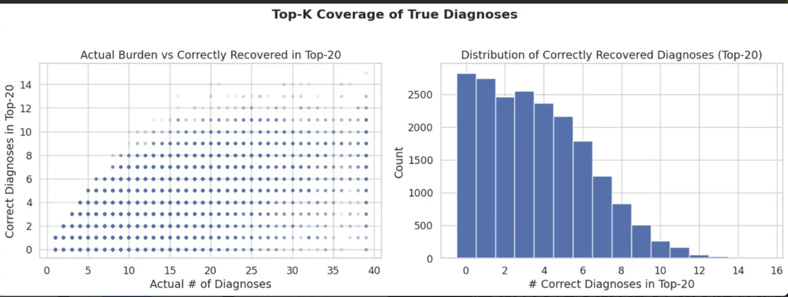
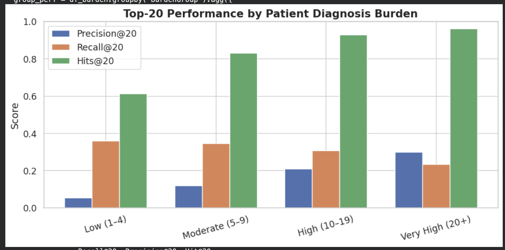
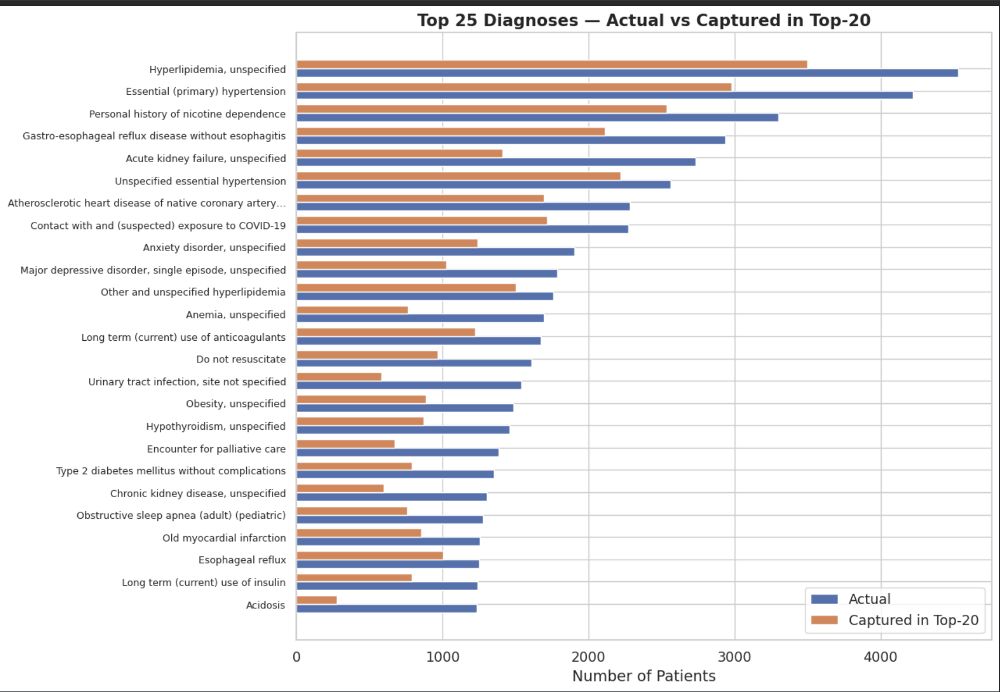
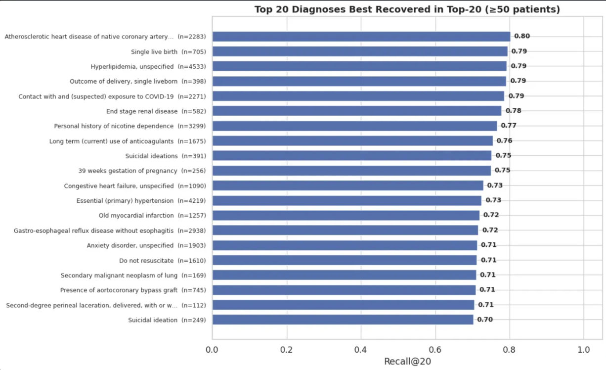
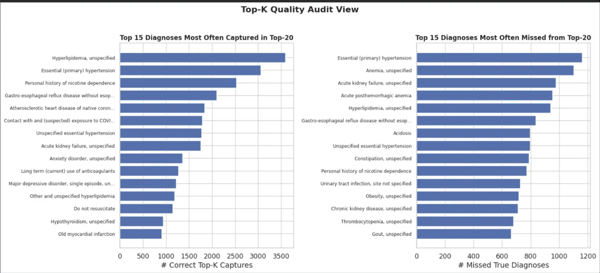
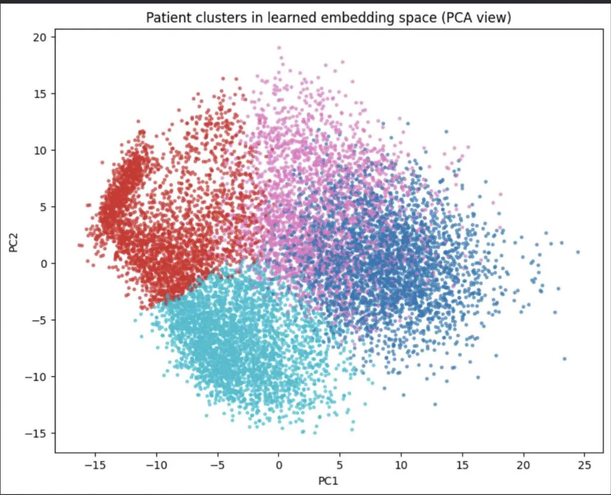

A custom neural network trained on 100,000+ patients that predicts which diagnoses a returning patient is most likely to receive at their next hospital visit — before they arrive — using only their prior admission history.
Hospital readmissions are one of the most costly and partially preventable challenges in U.S. healthcare. Despite widespread EHR adoption, most hospitals lack tools to anticipate a returning patient's needs before they arrive.
Heart failure patients return to the hospital within 30 days of discharge — a 20–25% 30-day readmission rate that costs the U.S. healthcare system billions annually. Research shows predictive models can reduce these readmissions by 10–20% when effectively implemented.
Build a machine learning model that predicts which diagnoses a patient is most likely to receive at their next hospital visit, enabling earlier awareness and more targeted care preparation before arrival.
Train a multi-label neural network on 100,000+ patients across 27,205 possible diagnoses. Evaluate using clinically relevant Top-K metrics. Discover patient subgroups from learned representations.
Earlier diagnosis awareness means faster triage, more efficient bed allocation, more targeted care teams, and pre-populated admission checklists — directly reducing avoidable readmissions.
Which aspects of prior admissions — diagnoses, length of stay, prescriptions — best predict next-visit diagnosis?
How much predictive lift do age, sex, race, and insurance add beyond clinical history alone?
Which diagnosis groups are most predictable from prior admission history, and what clinical patterns explain the difference?
Do the model's learned patient embeddings reveal clinically meaningful subgroups with distinct predictability profiles?
Prior approaches to clinical event prediction — including Doctor AI (Choi et al., 2017) and RNN-based trajectory models (Tran et al., 2015) — established the value of EHR-based prediction but faced key limitations this project addresses.
Prior models typically use hundreds of diagnosis codes. This project operates over the full MIMIC-IV vocabulary of 27,205 unique diagnoses — requiring new approaches to handle extreme label imbalance.
Densifying a 100K × 27K diagnosis matrix requires 20GB+ RAM. Prior approaches couldn't scale — this project solves it with sparse CSR matrices and EmbeddingBag layers.
DxTabNet's gated fusion layer learns per-patient weighting between tabular features and diagnosis history — more powerful than simple concatenation or addition used in prior work.
Original plan using prescription patterns was abandoned when systematic missing data was found for deceased patients. Pivoting to diagnosis data ensured full coverage regardless of patient outcome.
This project uses MIMIC-IV (Medical Information Mart for Intensive Care, v3.1), developed by the MIT Laboratory for Computational Physiology. It contains de-identified data on 200,000+ patients from Beth Israel Deaconess Medical Center in Boston, MA, covering 2008–2019.
Admission/discharge timing, demographics, insurance, language, race, marital status
546,028 rowsAge, gender, date of death per patient — all de-identified per HIPAA Safe Harbor
364,627 patientsAll diagnosis codes assigned to each admission, merged with readable long titles
27,205 unique dxDrug names, dosages, routes, timing — excluded from modeling due to systematic missingness in deceased patients (survivorship bias)
ExcludedMIMIC-IV data is de-identified but requires credentialed access. The raw data files cannot be shared publicly — this is a condition of the PhysioNet data use agreement signed to access this dataset.
To reproduce this project: (1) Create an account at physionet.org · (2) Complete CITI training · (3) Apply for MIMIC-IV credentialed access · (4) Download from physionet.org/content/mimiciv/3.1/ · (5) Run notebooks in order using the provided code.
The original plan used the Apriori algorithm to find medication co-occurrence patterns linked to in-hospital mortality. During exploratory analysis, deceased patients were found to have systematically missing prescription records — meaning any pattern found would only reflect survivors. This survivorship bias would have made findings misleading. Diagnosis data had full coverage across all patients regardless of outcome, making it the correct foundation for a forward-looking, reliable prediction task.
Exploratory analysis was conducted on a Heart Failure cohort (8,145 patients) as a focused clinical lens before scaling to the full 100,000+ patient model.
Top co-occurring diagnoses in HF patients confirmed expected clinical clustering — atrial fibrillation, essential hypertension, hyperlipidemia, and coronary atherosclerosis. Clinically notable: Trazodone and Tramadol appeared in the top 10 prescribed medications, both associated with worse outcomes in HF patients in the clinical literature.
All features were built exclusively from prior admissions — the most recent admission per patient was designated as the prediction target, with strict two-layer leakage prevention ensuring the model never sees information from the visit it's predicting.
Number of prior admissions · Total hospital days · Average, median, max, min, and standard deviation of length of stay — variability captures patient instability.
Both recent (most recent prior admission) and mode (most common across all priors) versions of categorical features — admission type, insurance, location, provider.
Age, race, gender. Age provided the most meaningful lift — older patients have more chronic conditions with predictable patterns. Race and language added minimal individual lift.
Sparse CSR matrix: 100,101 patients × 27,205 diagnosis columns, with frequency counts per prior diagnosis. Stored sparse to avoid 20GB RAM requirement of dense format.
Each output node = independent binary prediction for one diagnosis · BCEWithLogitsLoss + positive weighting (cap=20×) to handle extreme label imbalance
| Feature | Sparse Neural Network (Baseline) | DxTabNet (Final) |
|---|---|---|
| Diagnosis Input | Dense linear projection | EmbeddingBag (learned) |
| Fusion Method | Element-wise addition | Gated fusion (adaptive) |
| Hits@5 | 0.710 | 0.821 (+11.1pts) |
| Hits@10 | 0.793 | 0.886 (+9.3pts) |
| Hits@20 | 0.867 | 0.927 (+6.0pts) |
| Hits@30 | 0.895 | 0.944 (+4.9pts) |
Patient-level split — the same patient never appears in both training and test sets. Within each patient, the most recent admission is the prediction target; all prior admissions become features.
DxTabNet was evaluated using Top-K metrics — the clinically relevant measure of whether the correct diagnosis appeared in the model's ranked shortlist. With 27,205 possible labels, standard accuracy is meaningless; Top-K reflects how the tool would actually be used.




The more complex the patient, the better the model performs. Chronic high-burden patients have rich prior records with strong repeating patterns — exactly what the model was trained to recognize.




After training, K-means clustering (K=4, selected by silhouette score) was applied to the model's 256-dimensional patient embeddings — grouping patients by what the model learned, without any manual labels.

Cluster 1 (maternal/mental health, avg age 35) is the most predictable despite having the fewest diagnoses. Maternal outcomes, anxiety, and depression co-occur in highly consistent, visit-to-visit patterns — the model learns a reliable prior for this group. Elderly high-burden clusters are harder to predict not because of poor model performance, but because wide-ranging comorbidities make the prediction space broader and noisier.
Results are connected back to the four research questions, then translated into clinical impact, and finally evaluated honestly for limitations and next steps.
Diagnosis history dominated. ICD code history was the primary predictive signal, consistent with the EmbeddingBag architecture's emphasis. Length of stay and admission patterns added context.
Modest lift. Age and insurance contributed meaningfully. Race, gender, and language added minimal individual lift beyond clinical history — diagnosis patterns dominate.
Chronic > Acute. Stable, recurring conditions (hypertension, hyperlipidemia, atrial fibrillation) are highly predictable. Acute episodic events (AKF, acidosis, sepsis) require real-time data.
Yes — 4 clinically interpretable clusters emerged unsupervised from learned embeddings, with distinct predictability profiles driven by diagnostic consistency.
A Hits@20 rate of 92.7% means that for over 9 in 10 patient arrivals, the model's ranked shortlist already contains at least one correct diagnosis — before the patient is even examined.
Care teams begin with a ranked shortlist of likely diagnoses, reducing documentation time and risk of missed chronic conditions.
When the model flags high-acuity diagnoses like heart failure or end-stage renal disease, triage staff can proactively allocate beds and specialists before the patient arrives.
Patients whose predicted profile matches prior high-acuity admissions can be flagged for closer post-discharge monitoring — targeting the 20–25% HF 30-day readmission rate.
Important boundary condition: This model should be positioned as a decision-support tool, not a replacement for clinical judgment. For acute episodic events — sepsis, acidosis, acute hemorrhagic anemia — real-time lab values and vitals must be incorporated before reliable deployment for those diagnoses. The tool's strength is in chronic condition management.
All notebooks are available for reproducing results. Data access requires a PhysioNet credentialed account — instructions are provided in the README.